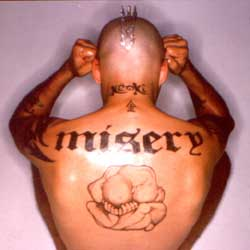

He arrived on the mainland with forty records, a bag full of clothes and $200 in his pocket, without the slightest idea he would become a key figure in a groundbreaking social movement. An artist whose music would shred the sonic spectrum for a digital generation, jonesing to transcend the old ways, Keoki was destined to make a name for himself.
Born in El Salvador, raised on Maui and nicknamed for the mysterious bastard son of a legendary Hawaiian king, Keoki arrived on the mainland US in the late eighties. Landing a job with TWA, in New York, tracking lost luggage enabled Keoki the opportunity to travel the world for free. But it was while moonlighting as a busboy at Danceteria, a hot Manhattan nightclub, that Keoki saw the sights and heard the sounds that would change his life and perhaps the future of pop music.
Fascinated by the powerful connection a DJ could make with a crowd, Keoki himself began to play records, putting his own distinctive spin on other artists’ music. Flamboyant as hell, he dubbed himself "Superstar DJ" Keoki. "I wore a jeweled crown, big furry collars and gold chains," he recalls with a laugh. "It was a gimmick, but the fun of it really caught fire." Though it started as a lark, the "Superstar DJ" Keoki phenomenon quickly became sought after in Manhattan. He worked legendary parties for the likes of Lou Reed, Deborah Harry, and The B-52’s. "All the glamorous creatures of New York were there," he says.
The former baggage handler soon became a jetting-setting commodity, performing to capacity audiences across America and overseas. He continued to discover dramatic new ways to keep a crowd in the palm of his hands. His was a sonic sleight-of-hand in which funk could meet punk, and where a barking Scooby Doo would mix perfectly with a ranting Jimmy Swaggert. "New York really showed me that I could draw on anything around me and make something of it," he says. "There were just no limits."